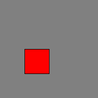
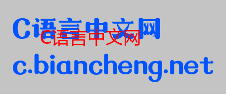

Pillow为图片添加水印
为图片添加水印能够在一定程度上避免其他人滥用您的图片，这是保护图片版权的一种有效方式。因此，当您在微博、或者博客等一些公众平台分享图片的时候，建议您为自己的图片添加一个水印，来证明这张图片属于您。
添加水印的方式的有很多种，比如通过一些图像处理软件，或者手机美图软件都可以实现添加水印的操作，但是这种操作比较复杂，甚至有些软件还不是免费的。
Pillow 库提供了添加水印的方法，操作简单，易学、易用。下面我们讲解如何使用 PIilow 给图片添加水印。
我们知道，水印是附着在原图片上一段文字信息，因此添加水印的过程中会涉及两个问题：
只要解决了这两个问题就可以成功添加水印。Pillow 提供的
下面创建一个 ImageDraw 对象，并对该对象的使用方法做简单介绍：
下面看一组简单的示例：
创建字体对象的语法格式如下：
下面看一组使用示例，如下所示：
图3：添加水印后效果
添加水印的方式的有很多种，比如通过一些图像处理软件，或者手机美图软件都可以实现添加水印的操作，但是这种操作比较复杂，甚至有些软件还不是免费的。
Pillow 库提供了添加水印的方法，操作简单，易学、易用。下面我们讲解如何使用 PIilow 给图片添加水印。
我们知道，水印是附着在原图片上一段文字信息，因此添加水印的过程中会涉及两个问题：
- 第一、如何使文字信息附着在图片上；
- 第二、如何绘制文字信息。
只要解决了这两个问题就可以成功添加水印。Pillow 提供的
ImageDraw和ImageFont模块成功解决了上述问题。
ImageDraw
PIL.ImageDraw 模块提供了一系列的绘图方法，通过该模块可以创建一个新的图形，或者在现有的图像上再绘制一个图形，从而起到对原图注释和修饰的作用。下面创建一个 ImageDraw 对象，并对该对象的使用方法做简单介绍：
draw = ImageDraw.Draw(im)上述方法会返回一个 ImageDraw 对象，参数 im 表示 Image 对象。这里我们可以把 Image 对象理解成画布，通过调用 ImageDraw 对象的一些方法，实现了在画布上绘制出新的图形目的。ImageDraw 对象的常用方法如下表所示：
| 方法 | 说明 |
|---|---|
| text | 在图像上绘制文字 |
| line | 绘制直线、线段 |
| eclipse | 绘制椭圆形 |
| rectangle | 绘制矩形 |
| polygon | 绘制多边形 |
表格中第一个方法 text() 需要与 ImageFont 模块一起使用，在下面会做详细介绍。
绘制矩形图的语法格式如下：draw.rectangle(xy, fill=None, outline=None)参数说明如下：
- xy：元组参数值，以图像的左上角为坐标原点，表示矩形图的位置、图形大小的坐标序列，形如 ((x1,y1,x2,y2))；
- fill：矩形图的背景填充色；
- outline：矩形图的边框线条颜色。
下面看一组简单的示例：
from PIL import Image,ImageDraw
#创建 Image 对象，当做背景图
im = Image.new('RGB',(200,200),color='gray')
#创建 ImageDraw 对象
draw = ImageDraw.Draw(im)
#以左上角为原点，绘制矩形。元组坐标序列表示矩形的位置、大小；fill设置填充色为红色，outline设置边框线为黑色
draw.rectangle((50,100,100,150),fill=(255,0,0),outline=(0,0,0))
#查看原图片
im.show()
#保存图片
im.save("C:/Users/Administrator/Desktop/添加矩形图.png")
图形显示结果如下：

图1：绘制红色矩形
图1：绘制红色矩形
ImageFont
PIL.ImagreFont 模块通过加载不同格式的字体文件，从而在图像上绘制出不同类型的文字，比如 TrueType 和 OpenType 类型的字体。创建字体对象的语法格式如下：
font = ImageFont.truetype(font='字体文件路径', size=字体大小)如果想要在图片上添加文本，还需要使用 ImageDraw.text() 方法，语法格式如下：
d.text((x,y), "text", font, fill)参数说明如下：
- (x,y)：图像左上角为坐标原点，(x,y) 表示添加文本的起始坐标位置；
- text：字符串格式，要添加的文本内容；
- font：ImageFont 对象；
- fill：文本填充颜色。
下面看一组使用示例，如下所示：
from PIL import Image,ImageFont,ImageDraw
#打开图片，返回 Image对象
im = Image.open("C:/Users/Administrator/Desktop/c-net.png")
#创建画布对象
draw = ImageDraw.Draw(im)
#加载计算机本地字体文件
font=ImageFont.truetype('C:/Windows/Fonts/msyh.ttc',size=36)
#在原图像上添加文本
draw.text(xy=(80,50),text='C语言中文网',fill=(255,0,0),font=font)
im.show()
im.save("C:/Users/Administrator/Desktop/c.png")
图像显示结果如下：

图2：添加文本
图2：添加文本
添加图片水印
通过上述知识的学习，我们对ImageDraw和ImageFont模块有了大体的认识，并且也解决了如何给图片添加水印的两个关键问题。以下示例展示了为图片添加水印的详细过程，代码如下所示：
"""
添加水印（函数式编程）
"""
from PIL import Image,ImageFont,ImageDraw
font=ImageFont.truetype('C:/Windows/Fonts/msyh.ttc',size=30)
def creating_watermark(im,text,font=font):
#给水印添加透明度，因此需要转换图片的格式
im_rgba=im.convert('RGBA')
im_text_canvas=Image.new('RGBA',im_rgba.size,(255,255,255,0))
print(im_rgba.size[0])
draw = ImageDraw.Draw(im_text_canvas)
#设置文本文字大小
text_x_width,text_y_height = draw.textsize(text,font=font)
print(text_x_width,text_y_height)
text_xy = (im_rgba.size[0] - text_x_width, im_rgba.size[1] - text_y_height)
print(text_xy)
#设置文本颜色（绿色）和透明度（半透明）
draw.text(text_xy,text,font=font,fill=(255,255,255,128))
#将原图片与文字复合
im_text=Image.alpha_composite(im_rgba,im_text_canvas)
return im_text
image = Image.open("C:/Users/Administrator/Desktop/c-net.png")
image.show()
image_water = creating_watermark(image,'@c语言中文网')
image_water.show()
image_water.save("C:/Users/Administrator/Desktop/c语言中文网.png")
添加水印后的效果图：图3：添加水印后效果
关注公众号「站长严长生」，在手机上阅读所有教程，随时随地都能学习。内含一款搜索神器，免费下载全网书籍和视频。

微信扫码关注公众号